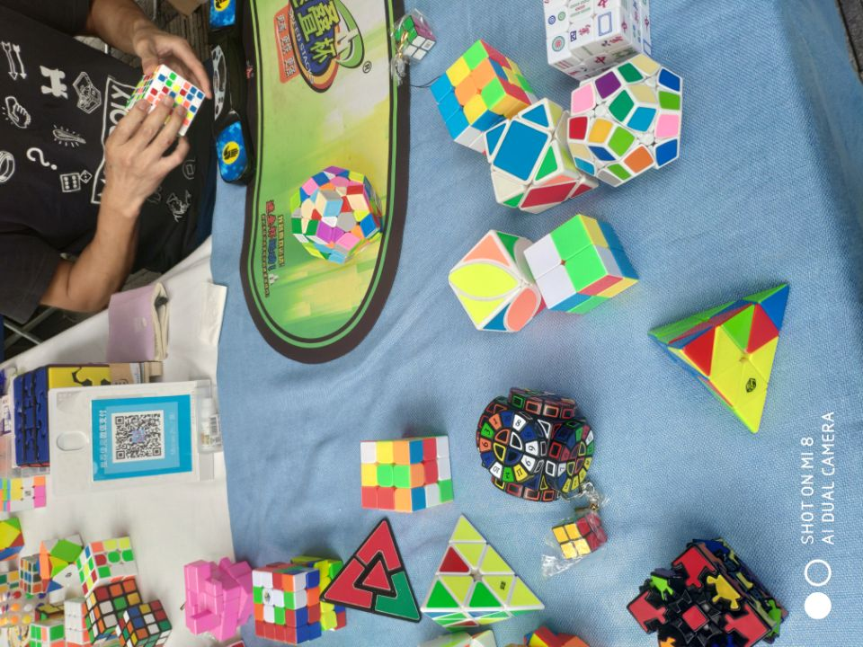
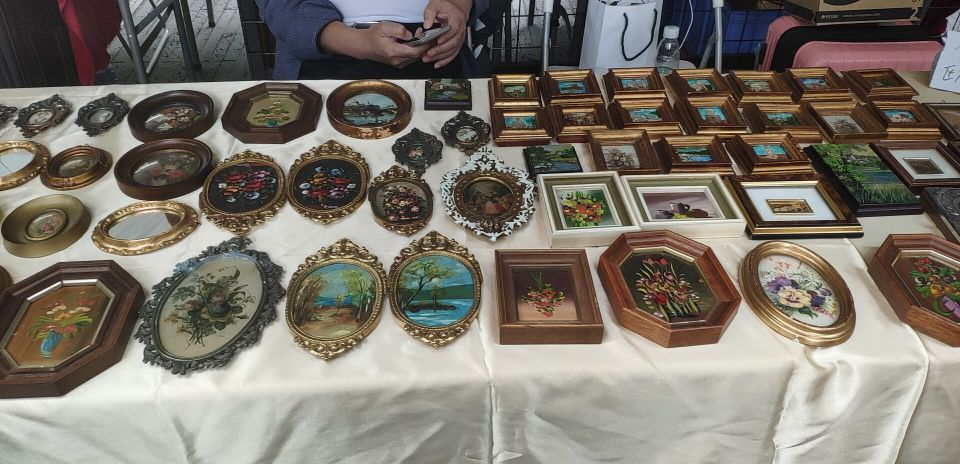
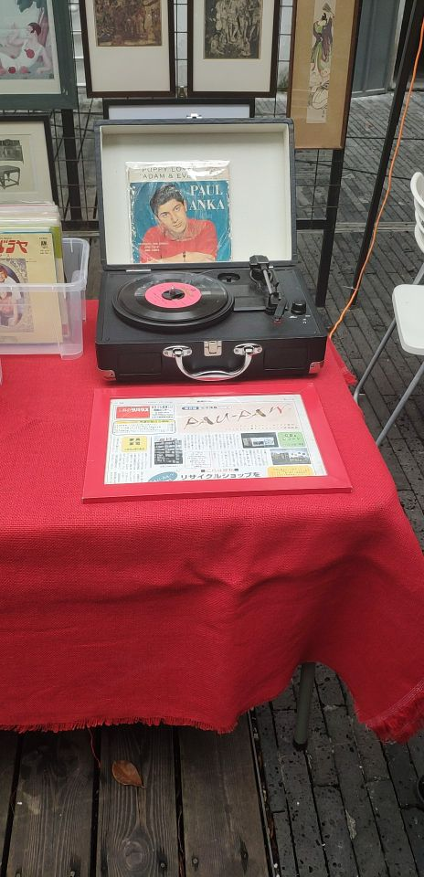
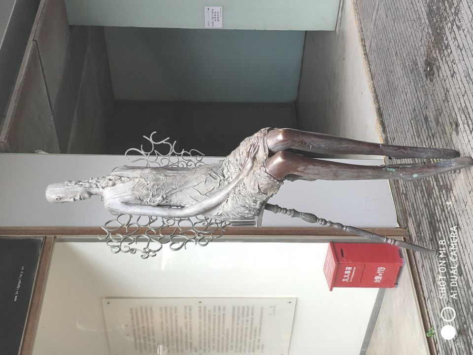
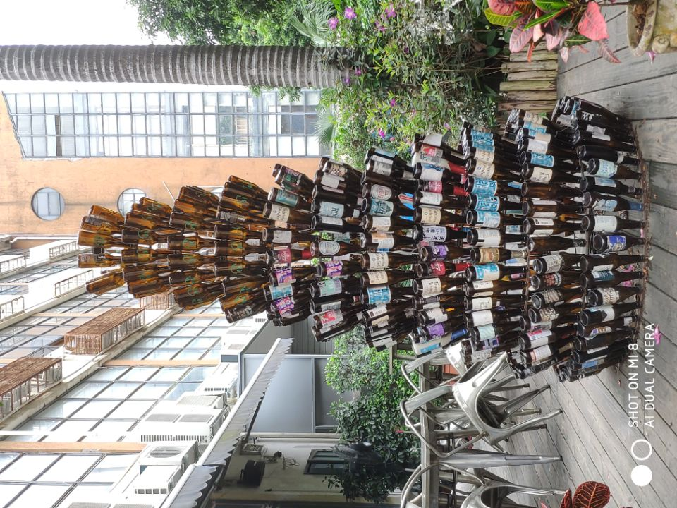
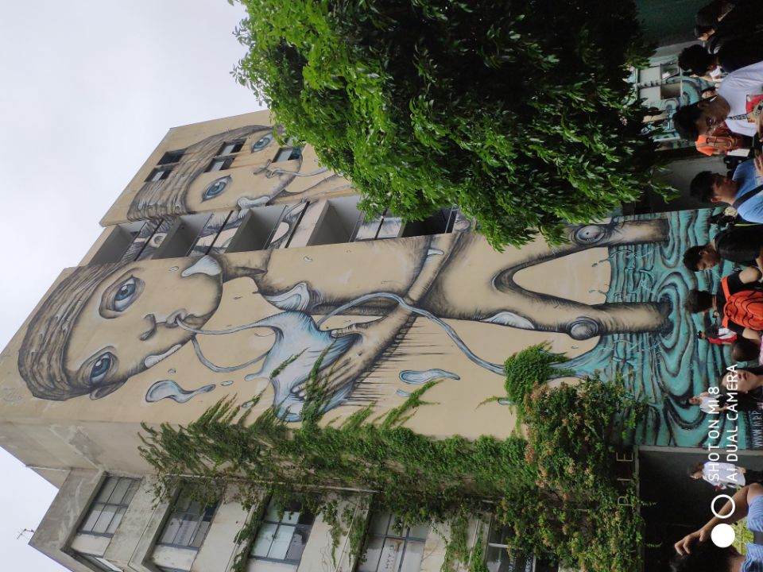
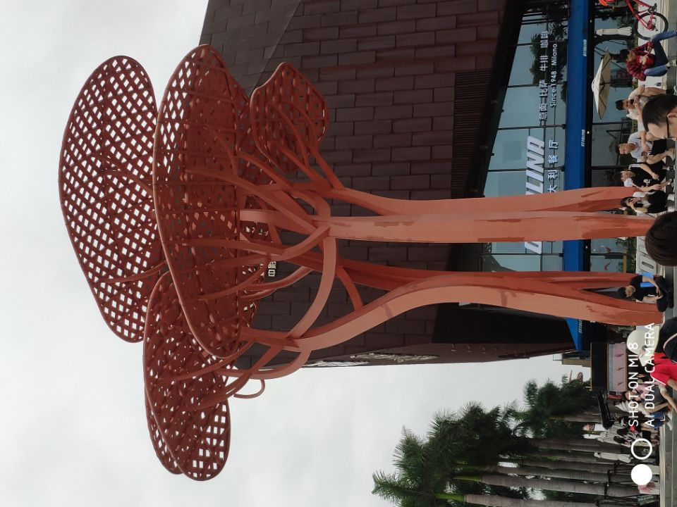
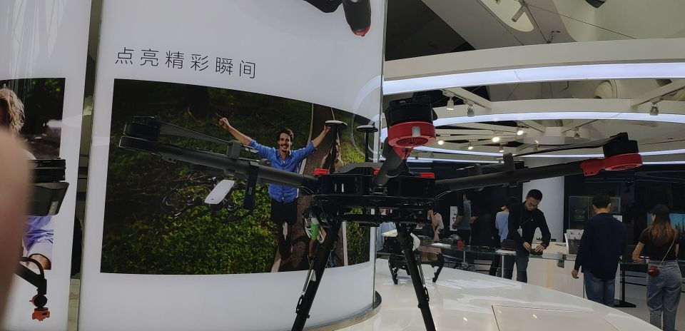

我的五一过得相当颓废。
整整四天的假期时光仿佛是一笔承诺的财富，如约地交到了我这个挥霍无度的穷人手中。尽管四天看起来很多，但对于我而言是远远不够，不一会就被安排得明明白白。由于繁忙的考试周与与自己的拖延症，待办事项如同滚雪球般越滚越大，至五一期间已堆积成令人叹息的模样。因此这难得的长假对我而言也只能是在堆积的事务中稍稍喘口气。
然而，作为毫无自控力可言的拖延症患者，这一笔诱人的财富能用百分之五十用在原计划上我就心满意足，足以自傲了。事实上的确如此，原定一天内解决的近代史纲要的论文在互联网与漫画的诱惑下硬生生地被拖延到第三天晚上才勉强完成，导致原本时间充裕的大学计算机复习时间被大大缩减。项目什么的更是丝毫未动，当真令人羞愧。幸好我原先也算是有些许自知之明，没有把两门数学课的复习列入计划内，不至于让自己焦头烂额。
近代史纲要的论文题目是自己的家族史。一开始听到这题目，其实我是拒绝的，毕竟像咱这世世代代农民出身的家族能有什么值得记载的历史呢？但是作业毕竟是作业，作为学生还是得老老实实地做。所幸，老师的要求并不高，只需要讲讲几代人的生活即可，没有什么考据等专业性要求。这意味着就算是瞎编讲故事也无妨，我爸也觉得我随便编一下就行。可惜阅历极浅的我对于那段时间的了解并不多，根本无法胡编乱造。所以最后还是花了大把时间向我的父母询问那段“毫不起眼”的历史。虽然最初只是把这个作业当做一个麻烦，但是随着对自己家族故事的深入了解，我却愈发地感兴趣了。解放战争、共产党、人民公社、文化大革命、改革开放……当这些从小到大都在学的熟悉名词遇上了自己身边的亲人时，一种奇妙的历史参与感便油然而生。第一次感到，那些熟悉的历史事件与自己是多么的接近。当真是任何一个人的人生都是一个时代的缩影啊。
虽然写论文花了多余预想两三倍的时间，但实际上还是有一天左右的复习时间的。加上原先约于第四天早上的乒乓球也因为球场装修而改了日子，按理来说还是非常充裕的。但是我向来不是一个讲理的人。持着计划制定出来就是为了打破的原则，我成功在漫画的怀抱中“荒废”了一个早上加半个下午，成功将复习时间压缩了一半。我可以毫无底气地宣称，这不过是为了将时间更加有效率地使用的一种策略，一切都在我的计划中。说实话，大学计算机课我这学期基本上是没有听过的。课程本身无趣，老师讲得也无聊，加上有一部分内容也都了解过，我是根本没有听课的欲望。每节课刷刷手机，写写作业(并没有)就这样浪过去。作业偶尔认真写一下，基本上没学到什么东西。复习的时候我连思维导图都懒得做，边看上课的PPT边写配套的习题，一章一章的地翻过去就当自己复习完了。至于SQL，我试着在codewars上写了几题，结果一道都没写出来，果断放弃以防打击自己的信心。还好5月5号的考试并不是特别的难，除了题型让我大吃一惊以及SQL依旧懵逼外都还好。成绩至今未出，但不出意外，及格还是能够的。
虽然这四天在学习上我的确颓废得很，但其实生活还是充实得像一般大学生活。介于5月8号又到了还书的日子，而我手上那本借来）两个月左右的《爵士乐时代的故事》尚有三篇未读，所以第一天早上就坐在大寝室的客厅里看看书做做笔记。看完书自然是要写书评，趁着刚刚读完，下午就顺便写写书评。然而想起上次那篇《骆驼的后背》还咕着，创意写作课的总结也忘了写，顿时感到任务重了好多。边写边浪着，直到第二天早上才写完。第四天早上才有时间去还了书，相应的又借来一本石黑一雄的《别让我走》。看书的时间固然少，但书不可不看，要不然又会陷入浅薄的思维沼泽，难以挣脱。不过想着六级考试也快到了，我也该看看手头那本英文版的《傲慢与偏见》。
第二天的下午和社团里约好玩桌游。其实我一直很期待玩桌游，尤其想试一试跑团。第一次知道跑团是在17年的十月番《如果有妹妹就好了》里面。我是很喜欢这部番的。尽管它并没有什么值得一提的剧情，也没有特别令人印象深刻的人物，制作方面平平常常，属于那种看着很有意思，但基本上没有安利价值的番剧，但是我却被这部动画所吸引着。因为这部动画描绘了我最渴望的生活状态——一间自己的房子，一屋子游戏书籍，友人常常造访，所遇大多有趣的灵魂……这是何尝令人羡慕的生活状态。所以这也成了我的理想之一。在我的理想生活中，桌游是必不可少的东西，毕竟是朋友聚会，居家旅行的必备品。因此在社里分出桌游分社时，我满怀欢喜地加入了，算是借此道踏入这个圈子。五月二号的下午是我第一次参加社里的桌游活动。由于人数多的原因，并没能跑团，而是玩了三个我从未玩过的桌游游戏——《爆炸猫》《推翻苏丹》《犯罪现场》。我比较喜欢《爆炸猫》，简单，有趣，刺激，流程也短。相比之下，后两者比较烧脑，需要各种推理，《犯罪现场》还需要两次连着抽到凶手的我来演戏，着实费劲。演戏的确是很累的事情，不仅要假装侦探推理，还得用最自然的方式误导侦探，每次一指到正确的红白牌我都会紧张一阵子。两次凶手都是输了，剩下一次侦探也完全没有表现的余地，可惜可惜。将整整一个清闲且充裕的下午献祭给桌游，我感到自己的san值逐渐回满。向桌游社的诸位道别后，我又到荷园吃了一锅物美价廉的麻辣香锅，然后心满意足地回到寝室。
我计划是第三天下午出门，毕竟是难得的长假，即便我是一个死宅，也不愿意一直呆在宿舍里发霉。而那天上午却下起了小雨。五一这几天一直是阴雨天气，天空灰蒙蒙的一片，绵长的雨丝时不时地飘落，让人在撑伞与不撑伞之间纠结。偶尔雨大了，淅淅沥沥地下一小会儿，不平整的地上又出现了大大小小的水洼。我讨厌在雨天出门，一是不愿意走满是水洼的道路，而是撑着雨伞总感觉极不方便。所以我有点担心这雨会一直下到午后，心想着若真是下一天的雨，我就索性窝在宿舍里看漫画。这两天沉迷于水上悟志老师的作品，一口气看完了《魂环》和《惑星公主与蜥蜴骑士》，还是意犹未尽。
不过雨很快就停了，到了下午地也差不多干了。我打算去红树林公园走一遍那条有名的海岸线。坐公交车发现途经华侨文化创意园，于是顺道去了一趟。去年十二月我去过一次创意园，但那时只是随便逛逛，走过著名的B10现场门口，然后到独立动画展览的会场里走了一圈，感觉不到什么趣味，便去看附近的马拉松比赛了。后来才意外得知此处的旧天堂书店小有名气，于是趁此机会决定去店里看看。
出乎我意料的是，创意园那天刚好有个小集市一般的展会。我满怀兴致地一个摊位一个摊位地看过去，发现了不少有意思的东西——木制的茶具、有些年代的瓷杯、自家蒸馏的香精……各种各样充满文艺气息的物品，让人眼花缭乱。有一个摊位摆满了各种各样奇奇怪怪的魔方，两位摊主坐在计时器前专心致志地转着手中的魔方；另一个卖画的摊位上有一个孩子用马克笔画着精致复杂的空中楼阁。还有一家展示旧杂志旧报纸的摊位上摆着一架现在很少见到的电唱机，让曾经写过关于留声机论文的我心生亲切。


逛了一圈摊位，我便找那家旧天堂书店。书店很有那种怀旧悠闲的氛围，昏黄的灯光、拥挤却整齐的书籍、老旧的机器……我进门时店里放着旧式的摇滚乐，一曲结束后有放了一首有点迷幻味道的音乐。店里的书都很有意思，充满了文化感。但不同于其他书店，这家书店最令我感兴趣的还是其陈列的音乐专辑和黑胶唱片：Jazz,Rock,Funk……看着这些承载上世纪荣光的小盒子，我感到无比兴奋。虽然我基本上看不太懂，但是我还是傻里傻气地一个一个看过来，内心期待这能有一张自己听过的专辑或者唱片。
书店的照片我虽照了一张，但事后才发现自己拍糊了，所以只能用其他地方的照片替代。希望以后能有机会再照一张。

离开了创意园后，我继续朝着红树林前进。这次的公交车下站点正好在红树林公园的对面，欢乐海岸的门口。因为是我独自一人的出游，所以行程也比较随意。我就到欢乐海岸外面的广场上逛了逛。也许是五一的缘故，广场上的人很多，大部分是一家人整整齐齐地来到此地游玩。那些孩子们在起伏的喷泉旁玩耍，而他们的爷爷奶奶，爸爸妈妈则在一旁面带笑意地看着。广场旁有一座造型奇特的建筑，我走近一看，原来是大疆的旗舰店。由于学校与专业的缘故，我常常能听到大疆的名号。此时看见他家的旗舰店，自然也好奇地走进去看看。店里展示着许多不同型号的无人机，还有看上去就有高科技感的摄影机器。我照旧是不懂装懂地看了一遍，就退了出来。门口有一架小型的无人机翱翔在人群上空，仿佛一只新生的飞鸟。


通过地铁站穿越马路，我总算来到了最初的目的地——红树林公园。人很多，灰蒙蒙的天空下五颜六色的一片。这是我的第一印象。我觉得自己应该挑一个非节假日的晴天来此地。所谓海岸，其实和我家乡那边的滩涂差不多模样，由于是阴天的缘故，似乎有些压抑的感觉。公园倒像是我曾经去过的西湖畔，一路上全是行人。近年来，穿汉服的小姐姐似乎越来越多，大家也都愿意来到人群中间展现自己的风采，以至于我一路上看到不少穿着汉服的小姐姐（应该是小姐姐吧），让我一度疑心周围有什么漫展。海边的道路很长，我听着耳机内的音乐，嗅着海风中咸湿的气息，望着广阔的天地、来往的行人，心情惬意得像是踩在棉花上流畅地跳着华尔兹。
五一四天的假期在我颓废而又充实的生活中结束了，繁忙的学业生活又将来临。虽然我依旧是犯了严重的拖延症，不过好歹也算是完成了预定的计划。希望接下来的五月里，我能迎来更加充实的生活吧。